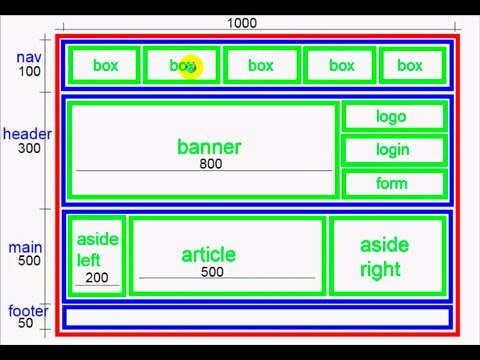

La maquetación, también llamada a veces diagramación, es un
oficio del diseño editorial que se encarga de organizar en un espacio, contenidos escritos, visuales y en algunos casos audiovisuales (multimedia) en medios impresos y electrónicos, como libros, diarios y revistas.
Objetivo:
Es mantener separado el contenido de la página de la
presentación. De este modo haces más fácil el mantenimiento y cambios al contenido y diseño que tengas que hacer en el futuro. Hay otras ventajas, como reducir el tiempo de desarrollo y el tiempo que el usuario debe esperar a que se cargue completamente el sitio.
Proceso:
Es la transformación del diseño de un producto web en un conjunto
de archivos (html, css, js) capaces de ser reproducidos por los navegadores web. Es el proceso en el que el prototipo gráfico también denominado «layout» (con los requisitos estructurales y estéticos definidos y aprobados en un análisis inicial) pasa a transformase en código html, css y js (estándares web) para que los navegadores puedan interpretarlo correctamente.
Planificación del proceso:
Estructura una retícula (visible o invisible) capaz de mostrar
los contenidos de la web: a la hora de plantear una maquetación web debemos fijar unas zonas de trabajo que soporten la estructura de contenidos de nuestro sitio web y generar los recursos necesarios que faciliten la futura carga de contenidos. Un error muy frecuente es plantear una maquetación estática sin pensar en las necesidades reales de la estructura de contenido. En estos casos, al introducir más o menos elementos de los inicialmente planteados se produce una des maquetación del documento que deteriora su representación.
Separa la presentación del contenido: es muy importante, para
facilitar tanto el proceso creativo como el futuro mantenimiento del sitio, separar el contenido y las funcionalidades de la web de los archivos que definen las propiedades gráficas (css). Además, este proceso optimiza la velocidad de carga de la web y permite la personalización del sitio según necesidades de los usuarios.
Utiliza estándares en desarrollo de la maqueta: para una correcta
representación de un documento web se recomienda el uso de los estándares web (conjunto de recomendaciones lideradas por la W3C) que nos permiten mostrar la información de forma universal y robusta y poder acceder al mayor número de usuarios independientemente del dispositivo o la tecnología que usen.
La edición de los archivos web y su base de html se realiza
mediante el uso de editores de texto plano, que permiten escribir código sobre un documento en blanco.
Para poder maquetar un documento web con este tipo de editores
necesitaremos tener amplios conocimientos en html y ciertas nociones de programación. Para facilitar este proceso existen los denominados editores gráficos de html, que nos permiten maquetar un documento web basado en estándares sin necesidad de teclear ni una línea de código, mediante el uso de un entorno gráfico de trabajo.